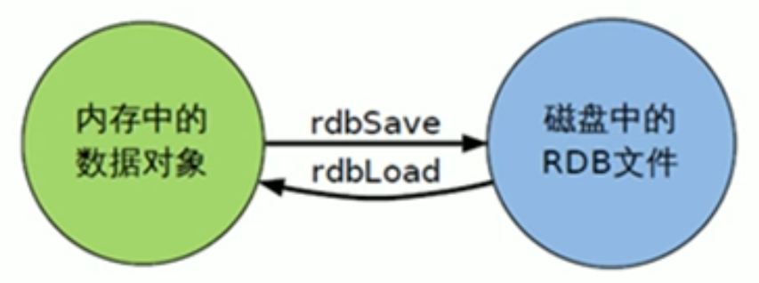

Redis Persistence - RDB
Redis Persistence
- RDB (Redis DataBase)
- AOF (Append Of File)
RDB
- 在指定的时间间隔内将内存中的数据集快照(Snapshot)写入磁盘, 恢复时将快照直接读到内存里。
备份是如何执行的
- Redis会单独创建 (fork) 一个子进程来进行持久化， 会先将数据写入到一个临时文件中， 待持久化过程都结束了， 再用这个临时文件替换上次持久化好的文件。 整个过程中， 主进程是不进行任何操作的。 这就确保了极高的性能。如栗需要进行大规模的数据恢复， 但对于数据恢复的完整性不是非常敏感， 那RDB方式要比APF方式更加的高效。 RDB的缺点是最后一次持久化后的数据可能丢失。
关于fork
- 在Linux程序中
fork会产生一个和父进程完全相同的子进程。 但子进程在此后多会执行系统调用， 出于效率考虑， Linux中引入了 "写时复制" (copy on write)技术， 一股倩况父进程和子迸程会共用同一段物理内存， 只有进程空间的各段的内容耍发生变化时， 才会将父进程的内容复制一份给子进程 。
RDB的保存文件(path and file name)
- redis.conf
1 2 3 4
dbfilename dump.rdb ... dir ./ ...
RDB Persistence policy
-
Interval and Changes
1 2 3 4 5 6 7 8 9 10 11 12 13 14 15 16 17 18 19 20 21 22 23
# Save the DB on disk: # # save <seconds> <changes> # # Will save the DB if both the given number of seconds and the given # number of write operations against the DB occurred. # # In the example below the behavior will be to save: # after 900 sec (15 min) if at least 1 key changed # after 300 sec (5 min) if at least 10 keys changed # after 60 sec if at least 10000 keys changed # # Note: you can disable saving completely by commenting out all "save" lines. # # It is also possible to remove all the previously configured save # points by adding a save directive with a single empty string argument # like in the following example: # # save "" save 900 1 save 300 10 save 60 10000 -
Manaul persist snapshot using command
save- blockingbgsave- nonblocking, background
-
stop-writes-on-bgsave-error yes： 当redis无法写入磁盘话，直接关掉redis的写操作 -
rdbcompression yes: 文件压缩 -
rdbchecksum yes: 使用CRC64算法进行数据校验， 但是这样做会增加大约10%的性能消耗， 如果希望获取到最大的性能， 可以关闭此功能。
RDB backup
- 先通过
config get dir命令查询rdb文件的目录 - 将
*.rdb的文件拷贝到别的地方
RDB recovery
- Shutdown Redis
- copy backup file to redis working folder
- start redis, data will be loaded

RDB 的优点
- 节省磁盘空间
- 恢复快速
RDB 的缺点
- 虽然Redis在
fork时使用了写时拷贝技术，但是如果数据量庞大时，还是比较消耗性能。 - 如果在备份周期中间redis down机，可能丢失数据